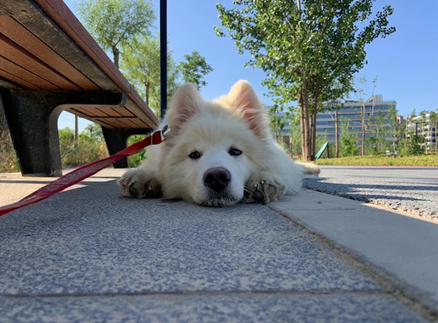
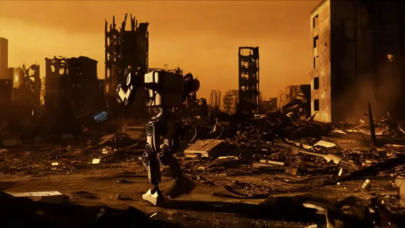

We introduce Deformable Gaussian Diffusion, a feed-forward framework for controllable 4D scene generation from a single image utilizing a video diffusion model. By synergizing generative priors with structural constraints derived from synthetic and real-world 4D video data, our approach directly predicts complete 4D representations without requiring test-time optimization or post-processing steps. Specifically, we generate the 4D world conditioned on camera poses, language prompts, and a single image. This generated world captures appearance, geometry, and motion, all encapsulated within predicted deformable 3D Gaussians in a generalizable manner. To achieve this, we first present a scalable data collection and processing pipeline for metric-scale 4D reconstruction, encompassing both geometry and motion. Subsequently, we enhance video diffusion models with a video latent transformer that jointly models spatio-temporal dependencies and incorporates the prediction of 3D Gaussian parameters and their deformations over time. Supervised by objectives targeting appearance fidelity, geometric accuracy, and motion consistency, our method ensures the generation of comprehensive 4D scene attributes. The method is validated on downstream tasks including video generation, novel view synthesis, and geometry exportation. Our method generates controllable 4D scenes within 30 seconds and demonstrates performance surpassing optimization-based approaches in dynamic scene understanding and synthesis.

The network architecture of Deformable Gaussian Diffusion. We present a high-fidelity 4D scene generation method from single images through four key innovations: video diffusion latents processed by our novel Transformer enabling dynamic 3DGS deformation, unified supervision with photometric, geometric, and motion losses, and progressive training for robust geometry and texture.
| Input Image | Ours (feed-forward) | MoSca (test-time optimization) |
 |
||
 |
||
 |
||
 |
If you find our work helpful, please consider citing:
@misc{
}